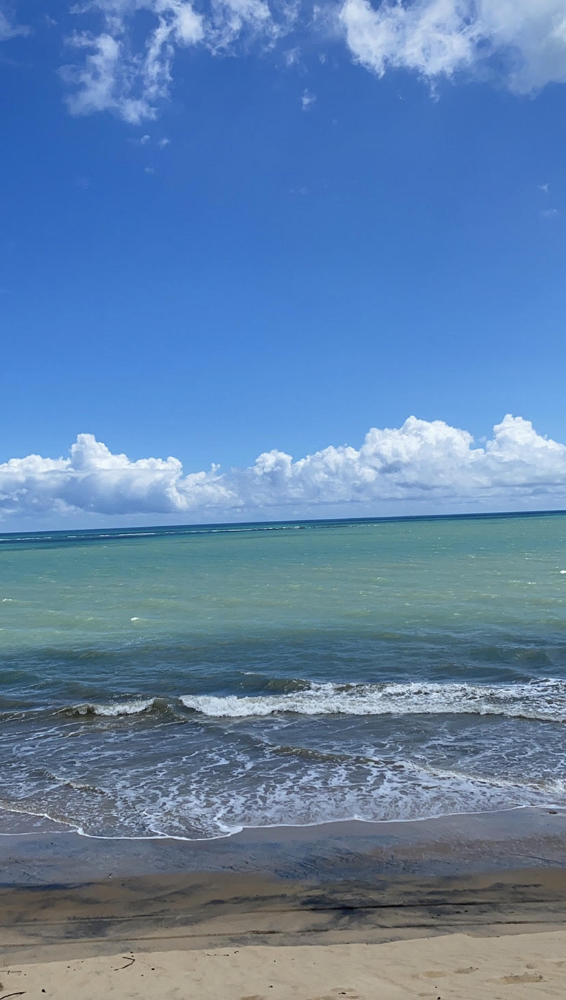
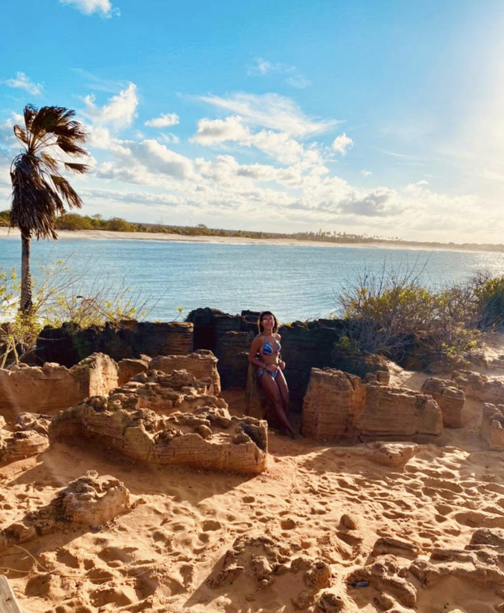
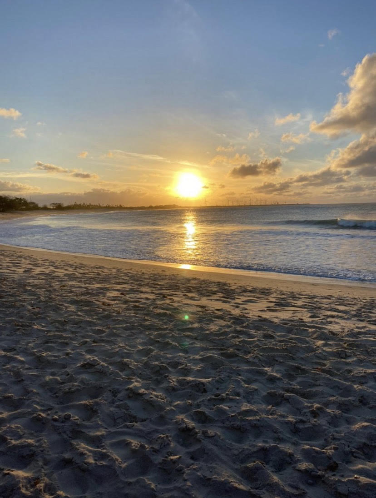

Sobre mim
Oii rafafiasss!!!
Meu nome é Rafaela mas prefiro que me chamem de rafaa
Meu aniversário é dia 19 de outubro e sou librianaa. Pensa em uma pessoa indecisa! pensou? sou euuu...acho que é por conta do meu signo. sofro demais com minhas indecisões. Além disso, meu ascendente é em escorpião e o que podemos concluir com isso? bom, já sabemos que sou uma pessoa um pouco difícil de lidar hahaahhaha
Meus amigos falam que as vezes sou estressada e grossa, que no caso não é mentira kkkkkk mas eu juro que sou muito legal, parceira e amiga
Eu amo ajudar e dar conselhos para quem precisa. Sou tímida mas quando eu pego intimidadeee, meu amorrr, vc conhece uma nova pessoa
Sou um pouquinho desorganizada hahahaha
Sou chocólatra, jurooo que qualquer tipo eu amo e não vivo sem.
Eu amo ficar com minha família!!!
Minha família
Como eu falei, eu amo ficar com minha família mas antes vou dar uma explicada:
Meus pais são separados e eu moro com minha mãe, mas a cada 15 dias eu vou passar no meu pai que mora um pouquinho longe.
Para começar, eu moro com minha mãe, meus avós e meu cachorro. Sempre de final de semana a gente se encontra com meus padrinhos (no caso minha madrinha é irmã da minha mãe) e meus primos. Nós amamos uma festa, um churrasco e uma música no último volume (obs: nenhum vizinho gosta da gente por causa dos barulhos). União é a palavra perfeita para definir a gente.

Sobre a parte do meu pai... bom, eu tenho uma irmã de 3 anos, minha avó e meu pai. Também tem minha madrasta e praticamente ficamos com a família dela que conheço desde 4 anos.
Uma das coisas que eu mais amo é estar com minha família porque eles me mostram o verdadeiro significado de AMOR.
Passatempo
Meu dia a dia é sempre o mesmo. Eu vou para a escola, faço as lições e no meu tempo livre eu:
-durmo kkkkkk
-assisto série, que para ser sincera algumas eu tenho preguiça de terminar, e por isso prefiro filme
-escuto sertanejo.... eu amo sofrência. já tive relacionamentos? não! mas sofro como se já hahaha
-fico com meu cachorro

ele tem cara de ser bonzinho mas é um pouco bravokkkkk. sempre que chega visita em casa ele quer morder
Basicamente é isso...
Por lugares incríveis
Eu sou do tipo de pessoa que tem o sonho de viajar para vários lugares. Se fosse para escolher só um tipo de lugar para ir, com certeza seria: PRAIA.
Praia e verão são duas combinções perfeitas e que eu amo muito. Sinto que na praia é um momento de esquecer os problemas e relaxar.
A que eu sempre vou é a Praia Grande porque temos casa lá, mas eu já fui para o nordeste que só tem praias lindas.... vou colocar algumas fotos
  O lugar que ficamos foi São Miguel do Gostoso(nordeste).As praias de lá são muito lindas.
É impressionante como praia remete paz. Ainda quero conhecer muitos lugares do mundo(até porque nunca sai do Brasil).
Acredito que cada lugar tem seu significado para cada pessoa.
Amor próprio
Para encerrar, vou falar de um assunto que é muito importante para mim: O AMOR PRÓPRIO.
Na nossa vida, a gente se cobra muito e se compara com os outros, principalmente com blogueiras do instagram. Precisamos entender que cada pessoa tem sua essência e seu valor.
O que eu sempre penso é que antes de amar alguém, devemos se amar primeiro. Quando falo 'se amar' não posso ser hipócrita (igual umas blogueiras hahaha).
Se amar é estar bem consigo mesma, é se autoconhecer e se olhar no espelho e ver o quão linda você é. Se você não gosta de algo em si ou no seu corpo, mude , mas mude PARA VOCÊ e não para os outros só para entrar em um padrão que não existe.
E nesse momento você deve estar se perguntando o porquê estou falando desse assunto.
A resposta que te dou é: já sofri muito por isso e como eu disse no começo do blog, eu amo ajudar as pessoas. Então não quero que mais ninguém passe por isso.
Todos tem seu valor, basta acreditar em si mesmo.
Se precisar de qualquer ajuda pode ver os meus outros blogs, porque lá falo de assuntos mais específicos
Foi isso..... Espero que vocês tenham me conhecido um poquinho melhor e que tenham gostado
Beijossss da rafafiaaa